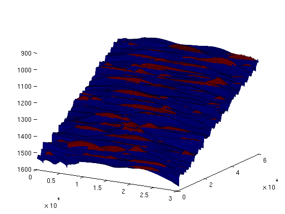
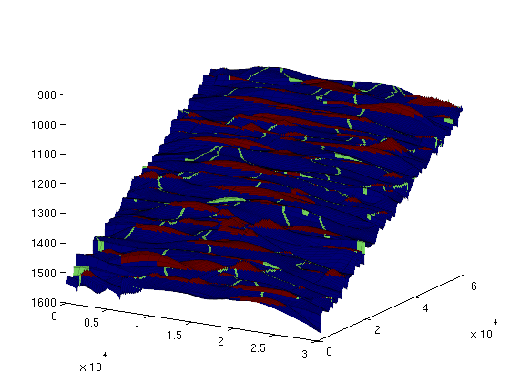
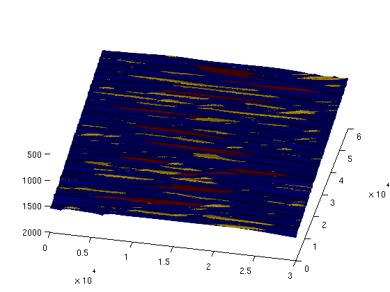
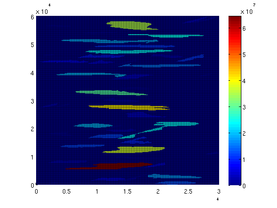
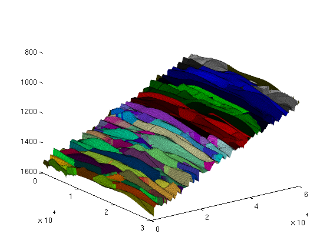

Demonstration of spill-point analysis and VE simulation: IGEMS
Contents
Information about IGEMS
Link: http://www.nr.no/nb/IGEMS Data description: http://files.nr.no/igems/data.pdf
Read and prepare grid structure
The full 3D grid is saved on the ECLIPSE format. The function 'readGRDECL' reads this file and produce a MATLAB data structure representing the grid on this format. The grid is then converted to the MRST grid structure using the 'processGRDECL' command, and useful geometry information is computed explicitly in the call to 'computeGeometry'. Finally, the top surface of the 3D grid is extracted as a 2D grid with the 'topSurfaceGrid' function.
matpath = fullfile(VEROOTDIR, 'data', 'mat'); if ~isdir(matpath) mkdir(matpath) end cachepath = fullfile(matpath, 'IGEMS.mat'); if exist(cachepath, 'file') load(cachepath); else pth = fullfile(VEROOTDIR, 'data', 'igems', 'eclipsegrids', 'OSS_NP2.GRDECL'); grdecl = readGRDECL(pth); G = processGRDECL(grdecl); G = computeGeometry(G); rock = grdecl2Rock(grdecl); [Gt,G] = topSurfaceGrid(G); rock2D = averageRock(rock, Gt); save('-v7.3', cachepath, 'G', 'Gt', 'rock', 'rock2D'); end rock2D.poro = 0.25 * ones(Gt.cells.num, 1); % @@ HACK
To illustrate the 3D grid and the extracted 2D grid, we plot them on the same figure. For convenience, we shift the plot of the extracted top grid fifty meters upwards. This way, the plots will not overlap and we will clearly see the extracted 2D surface as distinct from the 3D grid. As we can see from the resulting graphic, the top surface is gently sloping, slighly curved, and contains elongated local irregularities that runs perpendicular to the direction of the slope. In addition, there are several discontinuities from faults. Assuming that the top surface represents a boundary with an inpermeable caprock above, the geometric irregularity will provide a certain capacity of structural trapping of CO2 (local 'pockets' where the CO2, flowing upward, would be stuck).
The next section will present a geometric analyisis of this structural trapping capacity.
clf
Gt_zshifted = Gt;
Gt_zshifted.nodes.z = Gt_zshifted.nodes.z - 100;
plot_opts = {'edgeColor', 'k', 'edgeAlpha', 0.1};
plotGrid(G, 'edgeAlpha', plot_opts{:});
plotCellData(Gt_zshifted, Gt_zshifted.cells.z, plot_opts{:});
view(55,26);

First study: geometric analyisis of caprock (spill point analysis)
The following command carries out a structural trapping analysis based on the geometry of the top surface. It identifies all traps (local pockets), along with their depth (at which they 'spill over'), connections (i.e., when a trap spills over, which trap(s) does the CO2 flow into next), as well as the rivers along which CO2 flows between traps. In addition, each cell in the top surface grid is associated with an unique spill region associated with a trap (or with the exterior). A spill region of a given trap consists of all the cells in the grid that 'leads into' the trap; in other words, it consists of all the cells from which a quantity of CO2 would eventually flow into the trap.
ts = trapAnalysis(Gt, false); % 'true' runs a cell-based algorithm for analysis; % 'false' a node-based one (but result still % presented for cells, not nodes).
The resulting structure contains the following fields:
ts %#ok
ts =
traps: [180000x1 double]
trap_z: [187x1 double]
trap_regions: [180000x1 double]
trap_adj: [187x187 double]
cell_lines: {187x1 cell}
ts.traps associates an integer to each cell of the top grid. For cells located within a trap, the integer will be the index of that trap. For other cells, the integer will be a zero. Traps are indexed from 1 and upwards. The total number of traps would thus be given by:
num_traps = max(ts.traps) %#ok
num_traps = 187
In order to have an idea about the location and distribution of traps, we can plot the trap cells on the grid by generating a scalar field over the grid cells, with two possible values ('trap-cell' and 'non-trap-cell') and then call the 'plotCellData' command. On the resulting plot, we can see several long-narrow traps aligned with the crests of the surface, as well as a large number of scattered, small pockets.
trap_field = zeros(size(ts.traps));
trap_field(ts.traps>0) = 2;
figure(1); clf;
plotCellData(Gt, trap_field, plot_opts{:});
view(30,20); colormap('jet');
 Likewise, the 'rivers' exiting each trap (and then either entering another trap or exiting the domain) are stored in ts.cell_lines. We can visualise them together with the traps by making a separate scalar field for rivers:
river_field = zeros(size(ts.traps)); for r = [ts.cell_lines{:}]' for c = 1:numel(r); river_field(r{c}) = 1; end end figure(1); clf; plotCellData(Gt, max(trap_field, river_field), plot_opts{:}); view(30, 20); keyboard;
The vector ts.trap_z contains the spill point depth for each trap, i.e., the depth at which the trap 'spills over'. The trapping capacity of a trap is thus limited to the volume between the top of the grid within that trap and the plane defined by z equal to the spill point depth of that trap. (In addition, one would have to multiply by the rock porosity, since the storage volume is limited to the pore volume.)
With ts.traps, ts.trap_z and the porosity values from our averaged rock structure, we can now easily compute the storage volumes for each trap.
trap_volumes = computeTrapVolume(Gt, ts, rock2D.poro, 1:num_traps);
total_trapping_capacity = sum(trap_volumes);
fprintf('Total trapping capacity is: %6.2e\n\n', total_trapping_capacity);
Total trapping capacity is: 5.23e+08
We can get some information on the 10 largest traps of the grid:
[sorted_vols, sorted_ix] = sort(trap_volumes, 'descend'); fprintf('trap ix | trap vol(m3) | cells in trap\n'); fprintf('----------+---------------+--------------\n'); for i = 1:10 fprintf('%7d | %10.3e | %5d\n', ... sorted_ix(i), sorted_vols(i), numel(find(ts.traps == sorted_ix(i)))); end fprintf(['\nTogether, these traps cover %6.2e m3, which represents %3.1f ' ... 'percent of\nthe total trapping capacity of this grid.\n'], ... sum(sorted_vols(1:10)), sum(sorted_vols(1:10)) / total_trapping_capacity * 100)
trap ix | trap vol(m3) | cells in trap
----------+---------------+--------------
20 | 6.446e+07 | 1875
84 | 4.033e+07 | 1666
39 | 3.672e+07 | 1575
162 | 3.523e+07 | 1740
100 | 2.917e+07 | 1303
156 | 2.370e+07 | 891
145 | 2.314e+07 | 1335
51 | 2.312e+07 | 1385
65 | 1.850e+07 | 678
123 | 1.819e+07 | 876
Together, these traps cover 3.13e+08 m3, which represents 59.8 percent of
the total trapping capacity of this grid.
Now, we visualise the location of these 10 traps (plotted in red, against the remaining traps in yellow):
largest_traps_field = zeros(size(ts.traps));
largest_traps_field(ismember(ts.traps, sorted_ix(1:10))) = 3;
clf; plotCellData(Gt, max(trap_field, largest_traps_field), plot_opts{:});
view(12,60);
 We can also color code each trap according to the total volume it holds:
for i = 1:num_traps trap_field(ts.traps == i) = trap_volumes(i); end clf; plotCellData(Gt, trap_field, plot_opts{:}); colorbar;
Each trap has an associated accumulation region, which consists of all cells 'spilling into' that trap. In other words, injection of a quantity of CO2 into one of these cells would, assuming a purely gravity-driven flow, lead it to flow into the trap. If we also count all cells leading out of the grid as a separate accumulation region, then any grid cell belongs to exactly one accumulation region (either into a specific trap or out of the domain.
The accumulation region a cell belongs to is given by ts.trap_regions. There is one integer value per cell, either indicating the index of the corresponding trap, or '0' if it belongs to the accumulation region that leads out of the grid domain. We can visualize these regions by plotting them as a field on the grid, and use a colormap with sharp variations in color:
clf; plotCellData(Gt, ts.trap_regions, plot_opts{:});
colormap(colorcube(max(ts.trap_regions)+1)); view(54,26);
